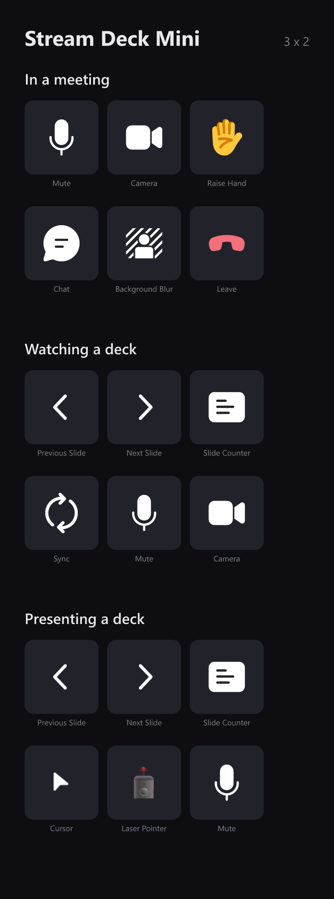
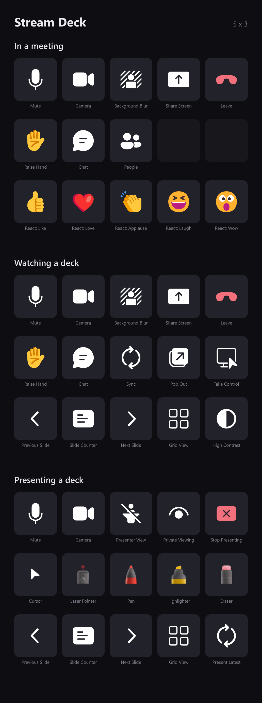
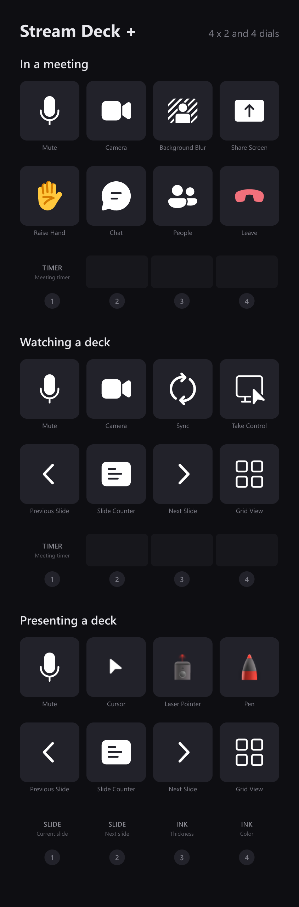
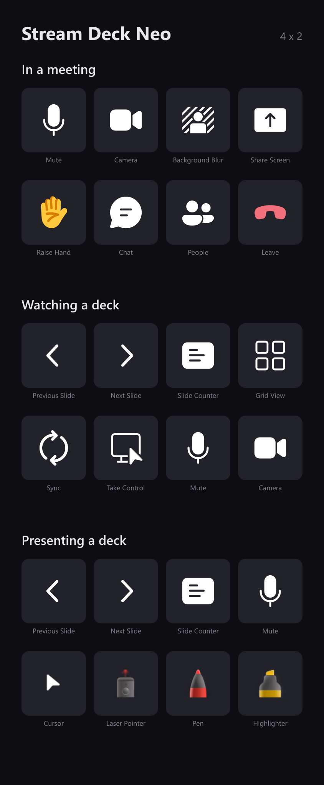
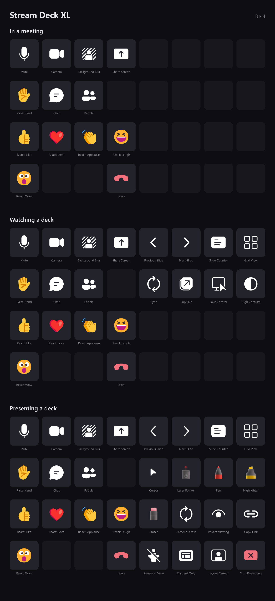
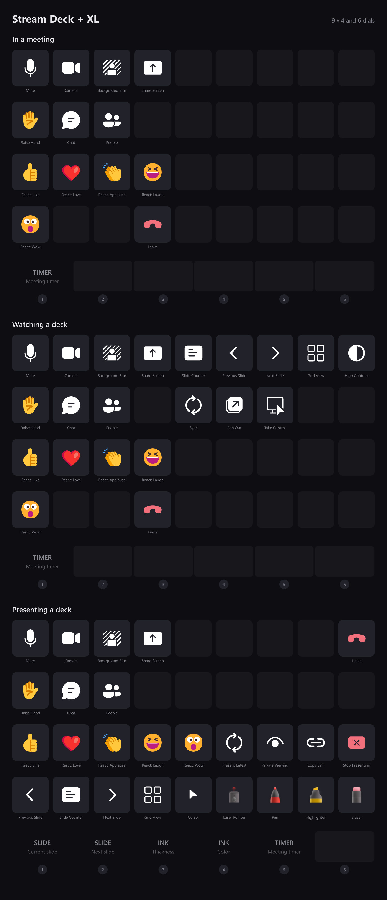

Teams Meeting Controls
Elgato Stream Deck plugin · Windows only
Control Microsoft Teams meetings and PowerPoint Live from your Stream Deck: mute, camera, raise hand, the five reactions, background blur, screen share, chat, people and leave — plus slide navigation, drawing tools and a live slide counter while a deck is up. Every key shows the real state of the meeting, so a muted mic looks muted before you press it.
- Live state on every key
- Full PowerPoint Live control
- Profiles that follow the meeting
- Layouts for every Stream Deck
- Dials and touch strip supported
- Works while Teams is unfocused
- Never sends keystrokes
- Keys dim outside a meeting
What it looks like


Layouts for your deck
Three layouts ship for every Stream Deck with a fixed grid — one for the meeting, one for watching a deck, one for presenting — and they can switch themselves as a meeting goes. Open yours to see all three, key by key.
Stream Deck Mini3 × 2

Stream Deck5 × 3

Stream Deck +4 × 2 · 4 dials

Stream Deck Neo4 × 2

Stream Deck XL8 × 4

Stream Deck + XL9 × 4 · 6 dials

These are generated from the profiles that actually install, so they cannot drift from what you get. Keys are drawn exactly as the deck draws them — the captions underneath are for this page, not something that appears on the hardware.
What you need
- Operating system
- Windows 10 or later
- Stream Deck
- Stream Deck software 7.1 or later, on any Stream Deck model
- Teams
- The new Microsoft Teams desktop app. Teams on the web is not supported.
State is read from the Teams window through Windows' own accessibility API, which is why keys stay correct when you click something in Teams itself, and why nothing is ever typed at whatever happens to have focus.
Support
Bug reports and feature requests are best filed on GitHub, where they can be tracked against a release.